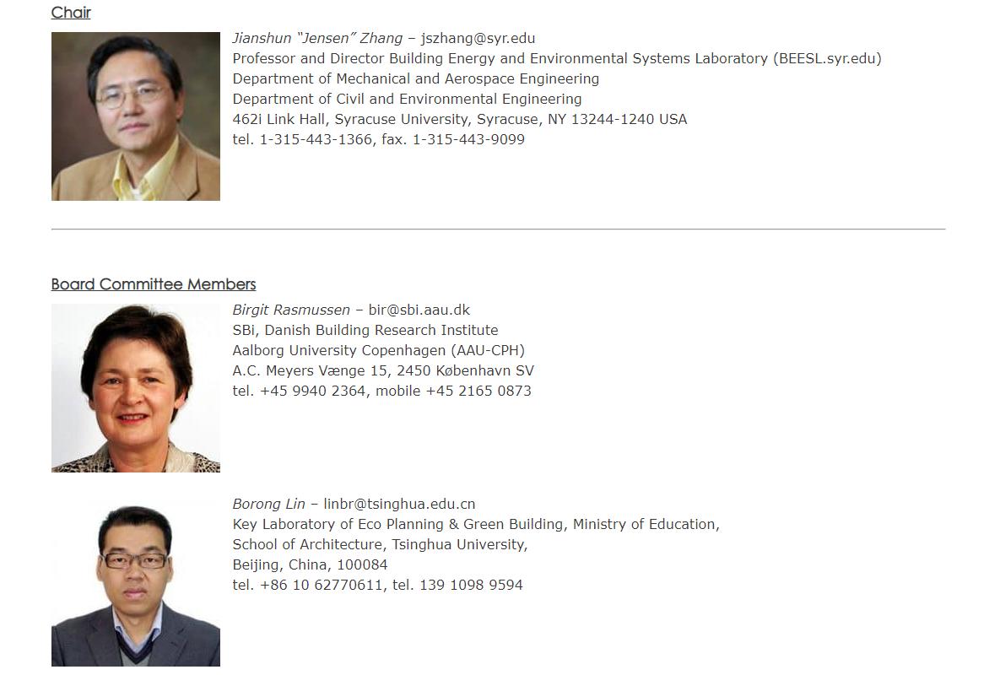

-
详情报道
-
张建舜教授当选国际建筑物理协会IABP主席
-
2018年9月，雪城大学举办了第七届国际建筑物理会议（IBPC2018），汇集了来自33个国家的建筑工程，科学和设计专家。
在为期三天的活动中，张建舜教授 Prof. Jianshun“Jensen” Zhang在会议期间被正式任命为国际建筑物理学会(IABP)理事会主席。
-
-
IBPC2018（详情链接 http://ibpc2018.org/）的主题是“健康，智能，有弹性的建筑和城市环境。”其论坛包括原创研究和开发工作的演示，创新绿色建筑技术的发现，展示和展览，以及对未来挑战和机遇的讨论。
-
国际建筑物理学会的治理由主席和理事会委员会组成。董事会委员会成员为10人，经过挑选是为了确保全球代表性。
在2018年至2021年的三年中，理事会委员会的组成如下：
-

-
主席
Jianshun Jensen Zhang - 美国（2012年加入）
-
董事会
Birgit Rasmussen - 丹麦（加入2015年）
Borong Lin - 中国（加入2015
年）
Fitsum Tariku - 加拿大（加入2012年）John Grunenwald - 德国（加入2018年）
Marco Perino - 意大利（加入2012年）
NeseGaniçSağlam - 土耳其（加入2018年）
Paula Wahlgren - 瑞典（加入2015年）
Ryozo Ooka - 日本（加入2015年）
Sergio Vera - 智利（加入2009年）
Staf Roel - 比利时（加入2018年）
-
中国工程院院士刘加平教授受聘南京大学兼职教授
-
刘加平先生为中国工程院院士，西安建筑科技大学教授、博导，绿色建筑研究中心主任。他长期从事建筑物理的理论与应用的科学研究，
专攻建筑热工与节能的基础理论和设计方法，潜心于地域民居建筑演变和发展模式的理论探索和工程实践，是我国该领域杰出的科学家之一。在国内外享有很高声誉。
-
2014年11月24日,我校授予中国工程院院士刘加平为南京大学兼职教授仪式。南京大学副校长杨忠、建筑与城市规划学院负责人及师生出席了仪式。受聘仪式由建筑与城市规划学院院长丁沃沃主持。
-
仪式上，杨忠副校长介绍了刘加平先生的简历和主要学术成果，并为刘加平院士颁发兼职教授证书并佩戴校徽。
-
刘加平院士表达了自己的感谢之情。他表示，南京大学历史悠久，学术成果丰硕，非常荣幸能够参与高校的高水平学术交流活动，为建筑学科发展贡献自己的力量。
-
仪式结束后，刘加平先生作题为《西藏建筑节能研究》的学术报告。他介绍了重大课题的申请，并以西藏节能建筑的课题为例进行的详细的讲解。